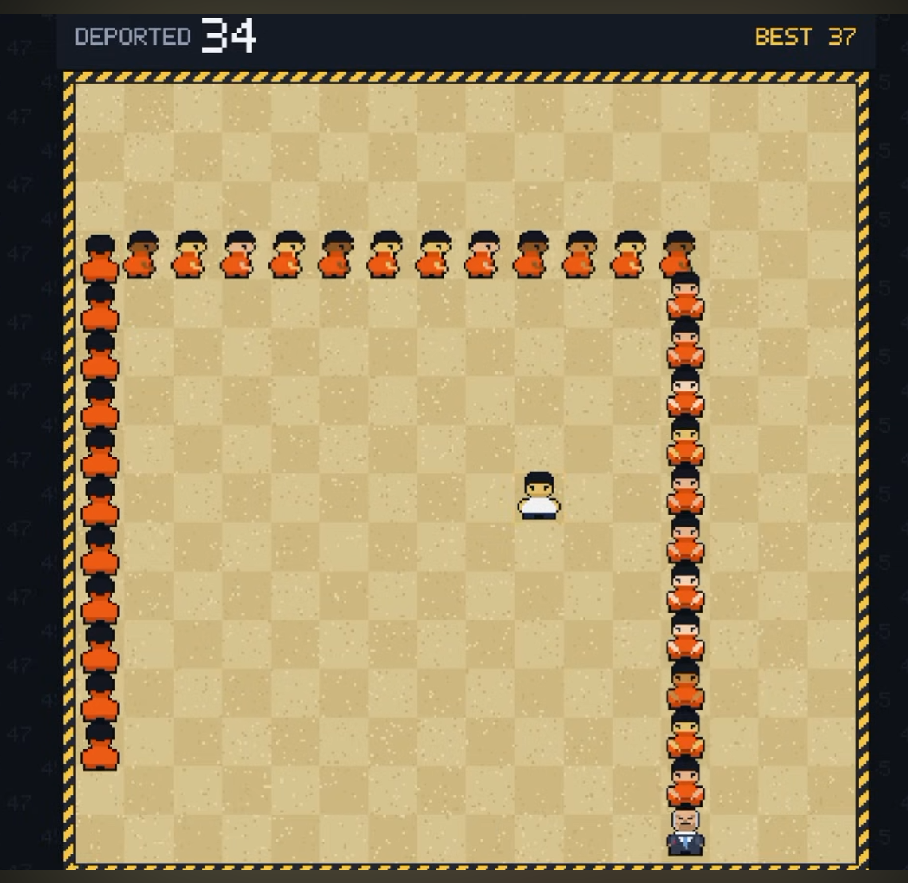
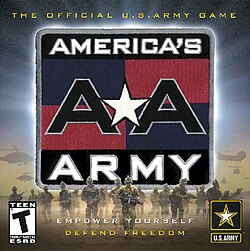

After AI images of immigrants in detention, ASMR videos of shackles and planes during deportation, and video comparing immigrants to Pokémon, the Trump government is now adding video games to its political messaging.
On September 3rd, the White House launched five arcade video games on its official website, including “Flappy Bill”, “Rio Run”, “Supply Line”, “Trump Savings Tycoon”, and “Build the Wall”. Apart from highly plagiarising mechanics from other games and strong MAGA intentions in them, two of the five games, Rio Run and Build the Wall, have become extremely controversial due to the way they portray immigration enforcement at the US–Mexico border.
Rio Run, the game that is still available on the White House’s official website today, heavily borrows the mechanics of the Snake (1997). Players control an old white border patrol officer, running around on a grid, collecting border crossers that spawn randomly across the chessboard. It’s worth noting that the border crossers are depicted as having mostly dark skin, and once they are collected, their clothes will change to prison detention uniforms.

At first glance, the game might even look cute, but that’s why its problem is overlooked. Characters’ skin color implies who will be the border-crossers and who will be the power-holder, highlighting differences between “us” and “them”, and reinforcing stereotypes. In addition, the game simply measures success by how many people you have captured, without information about any cross-borderers’ circumstances, and its high-score system invites players to capture more. Its mechanics turn the gameplay into entertainment, but completely ignore how complicated and controversial the U.S.–Mexico border issue is.
While Rio Run others border-crossers, Build the Wall completely demonizes border-crossers and depicts them as zombies. The game is currently not on White House’s website anymore, as it was taken down 5 days after it was launched. It exactly copies the Tetris game, but also spawns zombies (border-crossers) on the right side. Players have to block them by dropping shapes to build the wall, and there’s a huge billboard behind it that says: Southern Border, implying that this isn’t merely the Tetris game. It dehumanizes border-crossers with flesh and emotions into monsters, turning a complex political problem into an “us versus them” mentality, and depicts migration as an invasion.
These two games and the other three games are easy to make mini-games that developers like me will learn in the first game design classes. They created political propaganda at a low cost and think they are being funny by joking about the border issues. In fact, it reflects the contempt and disrespect that the United States, as the dominant power of the West, shows towards other countries. Raiford Guins, professor of Cinema and Media Studies at Indiana University, who specializes in game history, directly pointed out that these games are fascist games in his article.
This is not the first time that the U.S. government has used video games as political propaganda to target young people, and the past result makes the White House video games even more alarming. On Independence Day in 2002, the U.S. Army launched America’s Army, a video game that incorporates the daily life of a U.S. soldier and realistic tactical training in the military. The game soon became popular among younger generations. It attracted 8.5 million registered users across the world 5 years after it was launched and also became one of the top ten best online games, according to the article, America's Army Game Celebrates Fifth Anniversary. According to a scholarly article that discusses how impactful this game is, 30% of all Americans aged 16 to 24 had a more positive impression of the Army because of the game, demonstrating that the White House video games might also change how the young view border issues. They all develop the young’s national pride through gameplay, and they all hand them the power to solve border issues or kill opposing forces, yet they all mislead the young with slick rhetoric.

Some people might say they are just games, or that there are plenty of commercialized games that encourage violence. I agree that a game’s ideology doesn’t equal a player’s beliefs. The difference is, these mini-games are created by those with power, and they choose to present people in the games in the wrong way. Those who developed GTA might not be given the power to rob a bank, but White House has the power to determine who can stay in this country, and they turn their own policy into entertainment. In other words, it's people with power making a mockery of those without it.
It is inevitable that video games will simplify real-world issues, but there are still games that express them well. In Papers, Please, players are immigration inspectors who deal with executive rules, moral conflicts, and survival pressures at the border. It makes players question the rules and those in power and reflect on their own values through the moral decisions they make. In Bury Me, My Love, migrants have their own voice and story. Players control a husband who helps his wife flee from Syria to Europe through text messaging. These games all show that simplicity can leave room for individual lives and moral uncertainty.
After the game ends, we can close browsers, but the real suffering of border-crossers still exists every day. People can die when they cross the river; women can be raped if they don't have enough money to pay the gangsters to lead the way to the border; the shadow economy of migrant smuggling is still growing despite how tall the wall is. When playing these games, please remember that some of them are people who just have a dream and want to live a better life, just like you and me. And as developers, we need to consider more than just gamification, but also whose perspectives to leave out and what values to reward.
Links from the original essay
- https://www.whitehouse.gov/arcade/
- https://www.whitehouse.gov/arcade/rio-run/
- https://youtu.be/K8j0a7a9uPY?t=65
- https://www.youtube.com/watch?v=K8j0a7a9uPY
- https://raifordguins.substack.com/p/fascist-games
- https://www.army.mil/article-amp/105615/soldier_plays_to_keep_game_real?
- https://www.army.mil/article-amp/3865/americas_army_game_celebrates_fifth_anniversary
- https://academic.oup.com/sd/article/55/1/60/8369387
- https://store.steampowered.com/app/239030/Papers_Please/
- https://store.steampowered.com/app/808090/Bury_Me_My_Love/